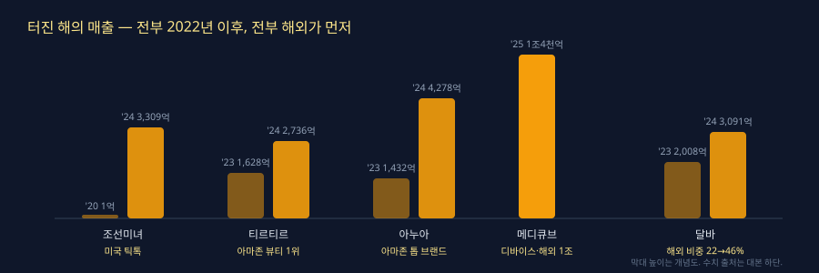

0:00훅
2020년 매출 1억이었던 브랜드가 있습니다.
2024년, 3,309억입니다. 4년 만에 3천 배.
조선미녀입니다.
이 브랜드가 한국에서 정식으로 팔리기 시작한 건 2024년입니다. 그 전에 이미 미국에서 터졌습니다.
오늘은 이런 브랜드 다섯 개를 봅니다.
언제 터졌는지, 무엇이 방아쇠였는지, 그리고 다섯 개에 공통으로 있는 한 가지.
그 한 가지를 알면, 다음에 터질 브랜드를 터지기 1년 전에 볼 수 있습니다.
0:40자기소개·선언
저는 뷰셀입니다. 5개월 동안 화장품 셀러 200명을 배출했습니다.
지금 셀러가 아니어도 됩니다.
이 영상은 브랜드 칭찬이 아니라, 브랜드를 1년 먼저 고르는 눈에 대한 얘기입니다.
다섯 브랜드. 각각 세 가지만 말합니다. 터진 해, 방아쇠, 숫자.
끝에 공통점 하나와, 그 공통점을 오늘 저녁에 직접 확인하는 방법을 드립니다.
1:30프레임
먼저 하나 짚겠습니다.
해외에 직접 나가라는 얘기가 아닙니다. 해외에서 나오는 신호를 읽자는 얘기입니다.
조선미녀는 미국 틱톡에서 시작해서, 2024년에 다른 회사를 사는 쪽까지 갔습니다.
시작점과 끝점이 다릅니다. 그 사이를 세 칸으로 나누겠습니다.
첫째, 해외 바이럴. 틱톡이나 아마존 리뷰에서 먼저 터지는 것.
둘째, 채널 진입. 아마존 1위, 세포라 입점처럼 유통이 열리는 것.
셋째, 인수 또는 상장. 돈이 들어오면서 규모가 바뀌는 것.
"터졌다"는 느낌이 아니라 숫자입니다. 1년 안에 매출이 두 배 이상 뛴 해.
다섯 브랜드를 이 틀에 놓습니다.
3:00핵심 1: 조선미녀·티르티르·아누아

첫째, 조선미녀.
2020년 1억. 2024년 3,309억.
방아쇠는 2022년 미국 틱톡입니다. 쌀 선크림 비교 영상에서 혼자 만점을 받았고, 그 해 아마존 블랙프라이데이 선크림 1위.
한국 홈쇼핑에 처음 나온 건 2024년 4월입니다. 미국에서 2년 먼저 팔렸습니다.
그리고 2024년, 이 회사가 사는 쪽이 됩니다.
1억이던 회사가 4년 뒤에 1,500억짜리 회사를 삽니다.
첫째 칸에서 시작해 셋째 칸에서 끝났습니다.
둘째, 티르티르.
2024년 매출 2,736억. 전년 대비 68%.
방아쇠는 쿠션의 색상 수입니다.
2024년 봄, 미국 흑인 크리에이터가 "내 피부색이 없다"는 영상을 올렸습니다.
티르티르는 3개였던 색을 그 해 안에 45개로 늘렸습니다.
6월, 국내 브랜드 최초로 아마존 뷰티 전체 1위.
성분을 바꾼 게 아닙니다. 색을 늘렸을 뿐입니다.
불만 하나가 방아쇠였습니다.
셋째, 아누아.
2023년 1,432억. 2024년 4,278억. 1년에 세 배.
해외가 3,644억, 전체의 85%입니다.
방아쇠는 어성초 토너의 아마존 성과. 2024년 아마존 톱 브랜드.
이 제품은 화해 2024 어워드 토너 1위였습니다. 국내에서 이미 검증된 제품입니다.
그런데 세 배가 된 건 국내가 아니라 미국에서였습니다.
국내 1위는 신호였고, 미국이 방아쇠였습니다.
5:00핵심 2: 예외 둘 — 메디큐브·달바
앞의 셋은 같은 순서였습니다. 해외 바이럴, 채널, 인수.
다음 둘은 다릅니다. 그래서 따로 봅니다.
넷째, 메디큐브.
2025년 단일 브랜드 1조 4천억. 국내 브랜드 중 1위. 해외만 1조.
방아쇠는 바이럴이 아닙니다. 2021년에 낸 기계, 에이지알 부스터입니다.
디바이스 매출이 4년 만에 약 100배.
3만 원짜리 크림 옆에 수십만 원짜리 기계를 놓았습니다.
세 칸에 없는 네 번째 방아쇠입니다. 카테고리를 바꾼 경우.
다섯째, 달바.
2023년 2,008억. 2024년 3,091억.
방아쇠는 해외 비중입니다. 22%에서 46%로, 1년 만에 두 배.
2025년 5월 22일 코스피 상장. 상장 직전 분기 해외 비중은 56%.
국내에서 승무원 미스트로 이미 팔리던 제품입니다.
매출이 뛴 해와 해외 비중이 두 배가 된 해가 같은 해입니다.
다섯 개를 한 줄에 놓으면 한 방향입니다.
7:00솔직 구간: 공통점 하나, 그리고 지금 들어가면 안 되는 이유
공통점은 하나입니다.
다섯 브랜드 전부, 국내에서 터진 게 아니라 해외에서 먼저 터졌습니다.
조선미녀는 미국 틱톡. 티르티르는 아마존 1위. 아누아는 아마존 톱 브랜드.
메디큐브는 해외 1조. 달바는 해외 비중 두 배.
국내 1위가 먼저 된 다음 해외로 나간 브랜드는 다섯 중 하나도 없습니다.
여기서 솔직하게 하나.
이 다섯 브랜드를 지금 리셀하면 늦습니다.
아마존 1위를 찍은 브랜드는 이미 올리브영 매대에 있습니다.
매대에 깔리면 늦습니다. 성분도 그랬고, 브랜드도 같습니다.
본사가 미국에 창고를 두고 직접 팝니다. 셀러가 끼어들 마진이 없습니다.
들어가야 하는 시점은 "터진 해"가 아닙니다. 터지기 1년 전입니다.
조선미녀로 치면 2021년. 아누아로 치면 2022년. 티르티르로 치면 2023년.
그때 신호가 있었습니다.
아마존 리뷰 수가 국내 리뷰 수를 넘는 순간입니다.
국내에서는 조용한데 미국에서 리뷰가 먼저 쌓이는 브랜드. 그 교차점입니다.
쿠팡이든 스마트스토어든 도매꾹이든, 어디서 팔든 신호는 같습니다.
그 신호는 지금도 공개돼 있습니다. 다만 아무도 안 봅니다. 국내 순위만 봅니다.
8:30실행 과제
오늘 저녁에 할 것 셋입니다. 영어는 두 단어뿐입니다.
첫째, 아마존 검색창에 korean skincare. 이 두 단어만 치세요.
나오는 한국 브랜드 중에 리뷰 수가 1만 개 안 되는 걸 다섯 개 적습니다.
1만 개를 넘으면 이미 터진 뒤입니다.
둘째, 그 다섯 개 이름을 네이버 데이터랩에 넣습니다.
아마존 리뷰는 느는데 국내 검색은 평평한 브랜드. 그게 2021년의 조선미녀입니다.
셋째, 그 브랜드가 도매꾹에 있는지 봅니다.
없으면, 아직 아무도 안 파는 겁니다. 그 자리가 셀러 자리입니다.
9:20마무리·구독
지금 시작하실 분은 설명란 카페에서 시작 체크리스트를 받아가시면 됩니다.
뷰셀이었습니다.